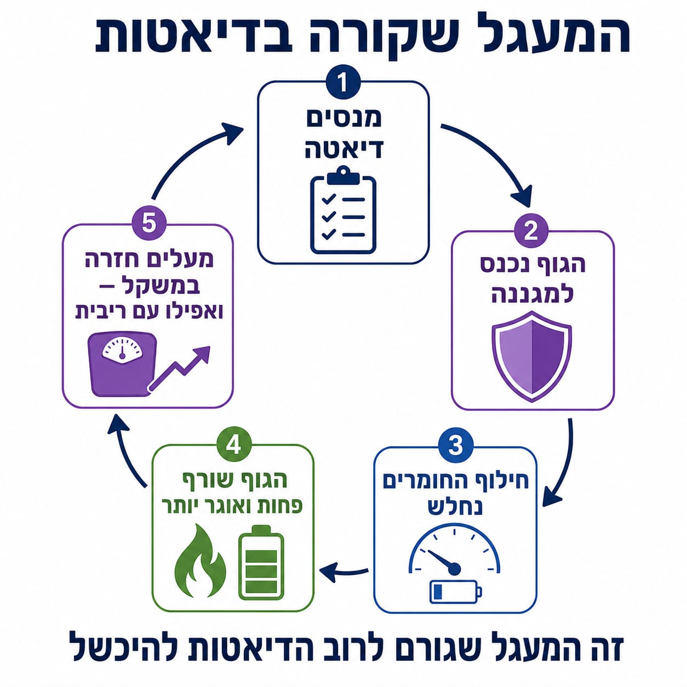
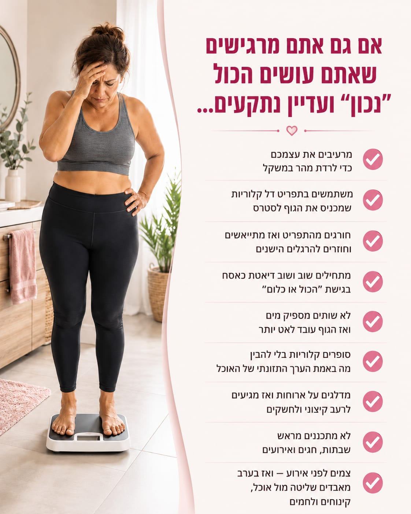
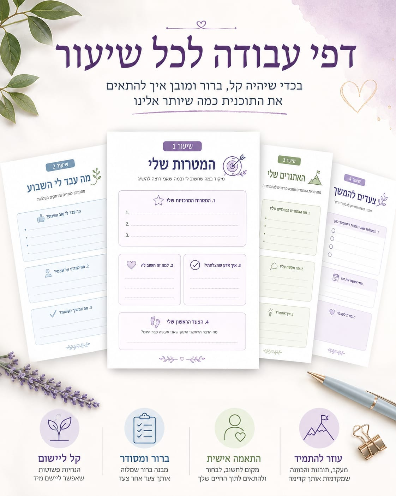

אם ניסיתם כבר דיאטות, תפריטים, צום, הורדת פחמימות, ספירת קלוריות או "להיות חזקים", ועדיין מצאתם את עצמכם יורדים ואז עולים בחזרה…
יכול להיות שהבעיה היא לא כוח רצון.
יכול להיות שפשוט לא הייתה לכם שיטה שמתאימה לגוף שלכם, לשגרה שלכם ולחיים האמיתיים.
בקורס הדיגיטלי של מטבולייף תלמדו איך לעבוד עם הגוף ולא נגדו, איך להפחית חשקים, איך לחזור למסלול אחרי חריגה, ואיך לבנות תהליך ירידה במשקל שאפשר להתמיד בו גם בשבתות, חגים, אירועים וימים עמוסים.
כולל שיעורי וידאו, דפי עבודה, בונוסים, פרוטוקול 24 שעות אחרי נפילה וקבוצת ווטסאפ קהילתית.
כן, אני רוצה להצטרף לקורסהצטרפות לזמן מוגבל
אנשים אמיתיים. בגילאים שלכם. עם אותם תסכולים, אותם ניסיונות, אותן נפילות ואותן מחשבות של "אולי הגוף שלי כבר לא יורד". עדינה, שרה, רפאל, בר ואורית מספרים בעצמם איך הם הצליחו לרדת במשקל, לשנות הרגלים ולהרגיש שוב שליטה בגוף.
תמונות לפני ואחרי של מטופלים


אתם מתחילים דיאטה בהתלהבות.
אומרים לעצמכם: "הפעם אני מצליח/ה".
✓ מורידים אוכל
✓ מוותרים על מתוקים
✓ נמנעים מלחם
✓ סופרים קלוריות
✓ מנסים להיות בשליטה
ואז אחרי כמה ימים או שבועות מתחילים להגיע:
✕ חשקים חזקים למתוק ולבצקים
✕ רעב בערב
✕ עייפות
✕ עצבים
✕ נפילות בסוף שבוע
✕ אכילה רגשית
✕ רגשות אשם
והמשפט המוכר:
"טוב, הרסתי הכל… ביום ראשון אתחיל מחדש."
וככה נוצר לופ שחוזר שוב ושוב:
דיאטה ← רעב ← חשקים ← שבירה ← רגשות אשם ← עלייה חזרה ← התחלה מחדש
אבל חשוב להבין:
הבעיה היא לא אתם.
הבעיה היא הדרך.

הרבה דיאטות בנויות על חסך, איסורים, רעב ושליטה קיצונית.
בהתחלה אולי יורדים קצת במשקל, אבל מהר מאוד הגוף והראש מתחילים להתנגד:
✕ יש יותר רעב
✕ יותר חשקים
✕ פחות אנרגיה
✕ יותר עייפות
✕ יותר מחשבות על אוכל
✕ ופחות יכולת להתמיד
וכשאי אפשר להתמיד, אי אפשר לשמור על התוצאה.
זו הסיבה שהרבה אנשים מרגישים שהם "עושים הכול נכון", ועדיין נתקעים, נשברים או עולים בחזרה.

בקורס הזה אתם לא מקבלים עוד דיאטה קשוחה.
אתם לומדים דרך אחרת: דרך שמבוססת על שובע, איזון, הבנה של הגוף וחזרה מהירה למסלול גם אחרי חריגה.
במטבולייף לא עובדים עם הגוף במלחמה.
לא מרעיבים אותו.
לא מכניסים אותו לחסך קיצוני.
לא בונים תפריט שאי אפשר לחיות איתו.
ולא גורמים לכם להרגיש שכל חריגה הורסת הכול.
במקום זה, אנחנו מתמקדים בארבעה דברים מרכזיים:
כי בתהליך אמיתי לא צריך להיות מושלמים.
צריך לדעת לחזור למסלול.


נטורופתית, מאמנת תזונה ומאמנת כושר
ב־15 השנים האחרונות ליוויתי אלפי אנשים בתהליכי ירידה במשקל, שינוי הרגלים, איזון אכילה וחזרה לשליטה מול אוכל.
אני יודעת כמה זה מתסכל להרגיש שניסיתם הכול.
כמה זה מעייף להתחיל דיאטה, להחזיק כמה ימים או שבועות, להישבר, להתאכזב מעצמכם ואז לחשוב שמשהו בכם לא בסדר.
אבל ברוב המקרים הבעיה היא לא בכם.
הבעיה היא בדרך.
כשמפסיקים להילחם בגוף ומתחילים להבין אותו, הכול משתנה.
בניתי את הקורס הזה כדי לתת לכם דרך פשוטה וברורה לצאת מהמלחמה הזאת, להפחית חשקים, לחזור לשליטה, ולהתחיל תהליך שאפשר להתמיד בו גם בחיים האמיתיים.
בקורס תלמדו למה הגוף נתקע, למה דיאטות קיצוניות גורמות לרעב וחשקים, ואיך אפשר לבנות תהליך שפוי יותר.
תבינו:
המטרה היא לא שתפחדו מאוכל.
המטרה היא שתלמדו לשלוט בו בלי מלחמה.
תמונות לפני ואחרי של מטופלים


הקורס מתאים לכם אם:

הרבה אנשים חושבים שירידה במשקל קשורה רק למה אוכלים.
אבל בפועל, סטרס גבוה משפיע מאוד על התהליך.
כשאנחנו בלחץ, עייפות או עומס רגשי, הרבה פעמים יש יותר חשקים, יותר תיאבון, פחות מצב רוח ופחות שליטה מול אוכל.
בקורס תלמדו איך להרגיע את הגוף, איך לבנות ארוחות משביעות יותר, איך להפחית נפילות ואיך ליצור תהליך שמרגיש פחות כמו מלחמה ויותר כמו שגרה שאפשר לחיות איתה.
כשיש יותר שקט בגוף ובנפש, קל יותר לבחור נכון, קל יותר להתמיד, וקל יותר לחזור למסלול גם אחרי יום לא מושלם.
בונוס 1: פרוטוקול 24 שעות אחרי נפילה
אכלתם יותר מדי?
הייתה שבת לא מאוזנת?
נפלתם על מתוקים או בצקים?
הייתם באירוע ויצאתם משליטה?
במקום לצום, להעניש את עצמכם או להתחיל מחדש ביום ראשון, תקבלו פרוטוקול ברור שמראה מה לעשות ב־24 שעות שאחרי.
מה לאכול.
איך להחזיר שובע.
איך להפחית חשקים.
איך לחזור למסלול בלי דרמה.
בונוס 2: התנהלות נכונה בשבתות, חגים ואירועים
אחד הדברים שהכי מפילים אנשים בתהליך הוא סוף שבוע, חג או אירוע.
הרבה אנשים עושים טעות:
לא אוכלים כל היום כדי "לשמור" לערב, ואז מגיעים רעבים מאוד, מאבדים שליטה ונופלים על מאפים, לחמים וקינוחים.
בבונוס הזה תלמדו איך להתנהל נכון לפני אירוע, מה לאכול כדי להגיע רגועים ושבעים יותר, איך לבחור נכון, ואיך ליהנות בלי להרגיש שהרסתם את כל התהליך.
בונוס 3: דפי עבודה ליישום
כדי להפוך את הידע לפעולה.
בדפי העבודה תוכלו לכתוב לעצמכם:
מה תוקע אותי
איפה אני נשבר/ת
מה גורם לי לחשקים
איך אני חוזר/ת למסלול
ומה הצעד הבא שלי בתהליך
הם כבר התחילו לראות שינוי אמיתי
אנשים שהפסיקו להרעיב את עצמם, התחילו להבין את הגוף, למדו להתנהל נכון יותר עם אוכל, והצליחו לרדת במשקל בצורה מאוזנת יותר, בלי להרגיש שכל החיים סובבים סביב דיאטה.
תמונות לפני ואחרי של מטופלים


המחיר הרגיל של הקורס: 697 ₪
197 ₪
מחיר השקה מיוחד, או 2 תשלומים של 98.5 ₪
במקום להמשיך לקנות עוד דיאטה שלא מחזיקה, אתם מצטרפים לקורס שילמד אתכם דרך אחרת.
השאירו שם ומייל. מיד לאחר מכן עוברים לתשלום מאובטח בקארדקום
אני רוצה שתיכנסו לקורס בראש שקט.
לכן יש לכם 7 ימי אחריות מלאה.
אם נכנסתם לקורס, צפיתם בתכנים והרגשתם שזה לא מתאים לכם, תוכלו לפנות אליי ולקבל החזר כספי מלא.
המטרה שלי היא שתקבלו ערך אמיתי ותדעו שיש לכם דרך ברורה יותר מול אוכל, חשקים וירידה במשקל.
לא עוד דיאטה קיצונית.
לא עוד רעב.
לא עוד רגשות אשם.
לא עוד "ביום ראשון אתחיל מחדש".
זה הזמן ללמוד דרך אחרת:
דרך שמבינה את הגוף. מאזנת חשקים. מאפשרת ליהנות מאוכל. ומחזירה לכם תחושה של שליטה.
מחכה לכם בפנים באהבה,
מיטל שרים
נטורופתית, מאמנת תזונה ומאמנת כושר | מטבולייף
הקורס אינו מהווה ייעוץ רפואי או תחליף לטיפול רפואי. במקרים של מחלות רקע, תרופות, היריון או מצב רפואי מיוחד, מומלץ להתייעץ עם רופא או איש מקצוע מתאים.